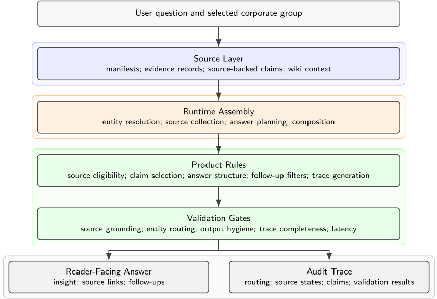
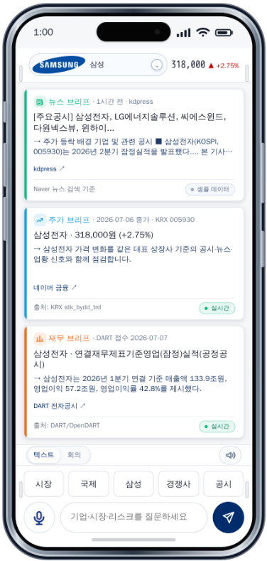
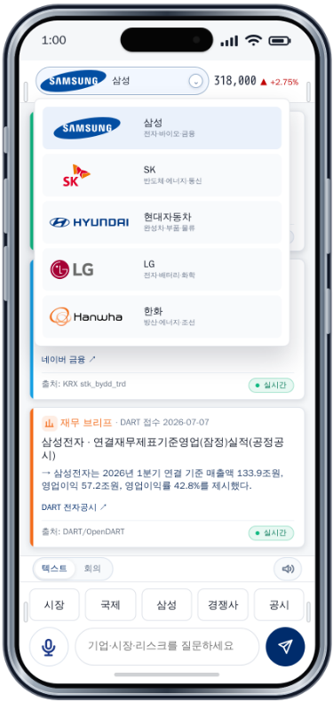
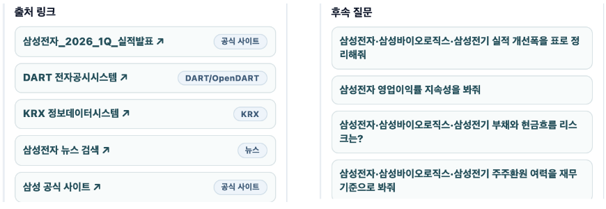

From Prompts to Contracts: Harness Engineering for Auditable Enterprise LLM Agents
从提示到契约：面向可审计企业级 LLM Agent 的 Harness 工程
简介
企业 LLM 应用常以'提示主导'原型起步，关键产品行为靠提示词与检索上下文承载，只能演示而无法保证。论文提出 harness engineering 方法：把源清单、证据记录、source-backed claims、答案契约与审计 trace 等确定性行为从提示迁入代码拥有的版本化契约层，LLM 只在可替换的组合边界上负责语言组织，输出不过契约门时回退到确定性 composer。在 5 个韩国财团、25 家上市公司、113 条 claims 与 30 个固定场景上，代码拥有的检查在三种托管模型替换的 270 次运行中全部通过；而关闭该门后仅靠提示词，30 次对抗运行的违规全部到达读者，外挂 guardrail 虽能拦截却因过度拒绝把效用降到 88/120（harness 保持 120/120）。核心结论是'prompts are not guardrails'：可靠性应落在代码拥有的执行层，这为团队把 Agent 原型做成可审计应用提供了可复用的工程模式与验证方法。
问题
企业 LLM 应用多以 prompt-dominant 原型起步：产品行为主要编码在自然语言提示与宽泛检索上下文中，可演示但不可保证。产品化要求每条可见论断可追溯到有界来源、路由到正确实体、受输出契约约束、可复现并可审计，而这些是提示词本身无法强制执行的。论文要解决如何把这类原型系统性重构为可追溯、可审计的 LLM Agent 架构。
方法
提出 harness engineering：在 LLM 外围包一层代码拥有的控制层。关键手段包括：(1) source-to-claim 管道——manifest 注册作为来源门，证据记录保存哈希与定位，候选语句经晋级门成为带 provenance、实体范围与使用策略的 source-backed claim；(2) LLM Wiki 式维护知识层仅作上下文，manifests 与 claims 保持运行时权威；(3) 产品规则（来源资格、实体路由、claim 选择、答案结构、follow-up 过滤、trace 生成）以代码、manifest、schema 与 validator 实现，提示保持简短且偏政策性；(4) 可替换组合边界——确定性 composer 提供可复现基线，live LLM 仅负责措辞且须通过同样的输出契约，失败即确定性回退；(5) 三族验证检查（泄漏、链接、语言）与逐阶段审计 trace 构成系统级验证设计。
关键结果
固定验证：30 个场景全部通过——109/109 期望 source-claim 引用解析成功、30/30 trace 契约、30/30 答案信号、60/60 输出卫生（泄漏阻断+来源链接保留）、0 次被 blocker 中止
故障注入负控：7 个单维度契约变异全部被检测（7/7），且仅由拥有该维度的 validator 标记
模型替换：Claude Sonnet 4、GPT-4.1 mini、Gemini 2.5 Flash 共 270 次组合边界运行，代码拥有的检查 270/270 通过；模型侧首过有效 234/270、携带所选 claim 引用 252/270、符合答案结构 250/270；最终通过率分别为 68.9%、85.6%、65.6%（χ²=10.57, df=2, p=0.0051），三次重复判定一致率 82.2%
执行层消融：prompt-only 条件下 30 次对抗运行全部违规到达读者（15 次推荐语言+15 次内部标识泄漏），harness 全部阻断（McNemar p<0.001）；外挂 guardrail 也全部阻断但误拒 4 个良性运行、阻断 28/30 对抗运行，效用 88/120，harness 保持 120/120
延迟：启用进程级缓存与预热后，30 个场景平均延迟从 1648.23ms 降至 69.40ms，1500ms 预算内运行从 16/30 升至 30/30
实时接口：5/5 财团连通性测试与 15/15 实时答案卫生测试通过
创新点
相对 LMQL、Instructor、Guidance、DSPy、NeMo Guardrails、Llama Guard 等按构造约束输出形式或行为的工具，本文的 harness 增加了 source-to-claim 权威层：由注册的 manifest-and-claim 集合独立于模型与检索决定哪些语句可进入答案。相对近期 harness engineering 文献（多为综述、概念定义或 harness 自动化），本文贡献了产品级测量：模型替换下的 live-LLM 组合边界检查，以及针对 prompt-only 与外挂 guardrail 基线的执行层消融。对 LLM Wiki 模式则重新分配权威：wiki 仅作上下文层，claims 保持运行时事实来源。
团队参考意义
相关度级别：high
命中能力域：3.3 Agent 架构与工具使用 | 3.5 评测与可靠使用 | 3.1 上下文工程与记忆 | 3.2 提示工程
理由：直接命中 3.3 与 3.5：论文核心就是把单 Agent 包在代码拥有的 harness 控制层中（来源门、实体路由、claim 准入、答案契约、trace 生成、验证门、确定性回退），并给出系统级验证设计（固定场景、故障注入、模型替换、执行层消融），正是团队'Agent 架构与执行可靠性'与'评测保障'的技术栈。3.1 相关：source-to-claim 管道与 wiki 上下文层是结构化上下文组织与生产环境上下文管理的具体方案。3.2 相关：RQ3 用实验证明 prompt-only 无法保证契约，为团队'提示的边界在哪里、何时应把行为迁入代码'提供了直接证据。对以'用好模型而非训练模型'为使命的团队，这是一篇方法论高度契合的论文。
建议动作：深入精读并做内部分享
中文全文
arXiv:2607.08028v1 [cs.AI] 2026年7月9日
From Prompts to Contracts: Harness Engineering for Auditable Enterprise LLM Agents
Joongho Ahn AI 领导力研究中心 jhahn@ceoai.kr Moonsoo Kim ∗ AI 领导力研究中心 mskim@ceoai.kr
Abstract
企业级大语言模型（LLM）应用通常以原型形式起步，其行为由提示词和检索上下文承载。产品化则增加了对来源边界、实体路由、答案契约和可复现轨迹的要求。我们提出一种 harness 工程方法，将这一模式重构为可追溯、可审计的 LLM 智能体架构：确定性行为被移入围绕可替换组合边界的代码、清单、schema 与验证工件之中，而有来源支撑的论断仍然是运行时答案的权威依据。我们在五个韩国企业集团（25 家上市公司）的公开数据切片上对该方法进行实例化，并评估三个研究问题。(1) harness 在固定的验证场景下保持其来源锚定、实体路由、轨迹、输出卫生与推荐语言契约；故障注入对照确认验证器会标记被故意破坏的契约。(2) harness 所强制执行的检查在模型替换下依然成立：在三个托管模型上，这些检查在全部 270 次组合边界运行中均通过；失败仅限于由模型组合的一侧，并被捕获和记录。(3) 由代码持有的保证是承重性的，并非仅靠提示即可复现：在固定模型、仅改变强制执行层的条件下，仅凭提示指令就会让推荐语言与内部轨迹泄露类违规到达读者，而 harness 能将其完全阻断。一种外挂式外部护栏同样能阻止此类违规，但会过度拒绝，使效用降至 88/120，而 harness 则保持了完整效用（120/120）；在此消融实验中，只有代码持有的强制执行能同时保持安全性与效用。其结果是一套可复用的工程模式，可将探索性原型转变为具备版本化来源、控制与验证工件的可审计应用。
1 Introduction
企业级大语言模型（LLM）应用往往首先以演示的形式进行探索：一个系统提示、一组检索到的文档，以及一个展示预期交互的用户界面。当重要的产品行为主要以自然语言指令或宽泛的检索上下文来编码，而代码、数据契约与验证工件仍不完善时，我们将这样的原型称为提示主导（prompt-dominant）。提示主导式开发对探索很有用，并且与 vibe coding 相关——后者是由 Karpathy 推广的一种对话式、LLM 辅助的软件开发工作流 [1, 2]。这样的提示足以承载行为以供演示，却不足以保证行为。产品化引入了仅靠提示无法强制执行的要求：每一条可见的断言都应可追溯到有界来源、被路由到正确的实体、在可断言的内容上受到约束、能够在相同假设下重新生成，并通过显式的、版本化的工件接受审计。这些关注点与先前关于幻觉以及面向人工智能（AI）系统的软件工程控制的工作相关联 [3-5]。
∗ 通讯作者。
1
本研究通过重构一个基于 LLM 的投资简报 Agent 来考察这一转变。作为研究动机的原型是在由 CEO AI 主办的一项为期十周的 AI 领导力项目中开发的 [6]；作者以与该项目背景相关联的 AI Leadership Research Center 作为署名机构报告这项工作。在项目期间，作者面向高管与客户场景构建并演示了十余个探索性 AI 产品原型，并借助托管于 Replit 的演示与参与者分享交互模式 [7]。投资简报原型提供了这些模式，包括移动优先的简报卡片、来源链接和后续问题。该原型为具有不同来源、轨迹与验证结构的重构系统提供了动机背景。
我们承接 harness 工程——一种将 LLM Agent 包裹在由代码持有的控制层中的新兴实践 [8-10]——并将其发展为一种可度量、基于契约的方法，把产品行为从提示迁移到显式的、版本化的契约之中 [11, 12]。在软件工程中，test harness 指的是在最终将调用低层代码的高层代码尚不可用时，用于对低层代码进行演练的脚手架代码 [13]。我们将 test harness 的思想适配到企业级 LLM Agent：harness 就是那一控制层，由代码而非提示持有，负责来源门控、路由规则、断言资格、答案契约、轨迹生成与验证。
在重构后的架构中，清单（manifest）定义了可以使用哪些来源，来源支撑的声明（source-backed claims）定义了哪些陈述可以进入运行时上下文，路由元数据将问题绑定到实体，答案契约定义了可见的答案，而轨迹（trace）记录了答案是如何组装起来的。经维护的维基页面提供紧凑的上下文，而来源清单与来源支撑的声明始终保持权威。
本文做出四项贡献：(i) 一种 harness 工程方法，用于将提示主导的企业 LLM 原型重构为可追溯的 LLM Agent 架构；(ii) 一条从来源到声明的知识流水线，将原始文档、证据记录、可进入运行时的声明、经维护的维基上下文与面向读者的答案分离开来；(iii) 一个可替换的组合边界，将确定性的 harness 控制与 LLM 措辞分离开来；(iv) 一套系统级验证设计，用于检查来源依据、实体路由、轨迹完整性、输出卫生、运行时接口行为、延迟以及真实 LLM 的组合边界行为。我们在一个有界的公开数据切片上实例化该方法，该切片涵盖五个韩国企业集团、25 家上市公司和 113 条来源支撑的运行时声明。
我们通过三个研究问题来评估这一重构，分别涵盖契约保持、模型替换与承重性强制执行：
我们以固定场景与故障注入的结果回答 RQ1，以跨三个托管模型的真实 LLM 组合边界检查回答 RQ2，并以一个强制执行层消融实验回答 RQ3——该实验禁用代码持有的验证与回退门控，并将其与外挂式外部护栏进行比较。与这一框架定位一致，本研究评估的是系统级可验证性，而非投资决策质量；后者是一个独立的领域价值问题，不在本文范围之内。
2
2 Related Work
本节回顾将 LLM Agent 原型转化为可追溯企业系统所需的研究与工程实践。贯穿本节的组织性问题是：一个答案在呈现给用户之前，如何被锚定、组装、约束并验证。
RAG 与可追溯性。检索增强生成（Retrieval-Augmented Generation, RAG）将语言模型与外部文档相结合，以改善事实锚定与可更新性 [14, 15]。后续工作表明，检索还必须具有选择性和可核查性：自反思式检索方法会判断是否需要检索、生成内容是否得到支持 [16]；事实性与归因方法则将生成内容与其证据进行核对——或将答案分解为原子事实 [17]，或为每条生成的陈述附加来源引用 [18]。然而，对已部署生成式搜索引擎的评估显示，流畅的答案所引用的来源往往实际上并不支持该答案 [19]，而这正是“来源到论断”（source-to-claim）层必须防止的产品级失败。Agent 增强的变体进一步对检索进行编排，例如对检索内容进行个性化 [20]，但编排本身并不能使来源具有权威性。检索选择性与事实可核查性与企业领域直接相关——在这些领域中，信息披露、投资者关系（IR）材料、新闻和监管申报文件会随时间变化。检索提供事实性上下文，而可追溯性还额外要求来源出处、实体范围以及论断级支持——即可归因于已识别来源这一属性 [21]。检索到的段落可能过时、不相关或混杂多个实体，而流畅的生成仍可能出现幻觉 [3]。要在产品层面解决这些局限，需要将答案锚定于一个结构化的“来源到论断”层，而不是仅依赖检索。我们的方法将 RAG 视为围绕该层构建的、由代码持有的 harness 中的一个组件。
LLM Agent 与验证。经典的 Agent 研究强调自主性、交互以及显式的系统架构 [22, 23]。LLM Agent 通过工具调用、规划、搜索和中间执行轨迹延续了这一传统 [24-27]。工具调用基准测试（benchmark）进一步表明，应用程序编程接口（API）的选择与执行既是工程问题，也是提示层面的问题 [28]。近期的应用工作还报告了多平台 Agent 部署与可编程的 Agent 运行时架构 [29, 30]。本文将重点从多平台部署转向企业级加固，其核心要求是可审计性：每个答案都必须记录是哪些来源、工具、论断和回退路径塑造了最终输出。关于多智能体 LLM 系统为何失败的实证分析将任务验证识别为一个反复出现的失败类别 [31]，这促使我们将验证变为一个显式的、被强制执行的契约，而不是一种涌现的模型行为。
Agent 编排框架。在研究基准测试（benchmark）之外，近期的编排框架使 Agent 工程变得更加具体。AutoGen 支持多智能体对话与协调 [32]；LangChain Agents 提供预构建的工具调用循环，LangGraph 为有状态 Agent 提供基于图的运行时 [33, 34]；CrewAI 则组织基于角色的 Agent、crew 与 flow [35]。本文提出的控制层与这些框架是互补的：编排框架解决的是 Agent 如何被组合与执行，而本文研究的模式所解决的，则是每一条生成的答案是否锚定于来源清单（source manifest）、有来源支撑的论断、输出契约与验证轨迹。这一锚定与契约层正是此类框架留给应用层去处理的部分：它们协调 Agent 如何运行，但本身并不决定哪些有来源支撑的论断可以进入答案，也不会对答案强制执行验证契约。由于这些契约定义在组合边界上，而非任何一个运行时内部，因此它们旨在与底层的编排运行时保持无关——无论是 AutoGen、LangChain、LangGraph、CrewAI，还是定制的 Agent 循环。
提示工程与原型构建。提示工程之所以变得重要，是因为大语言模型（LLM）能够依据自然语言指令和上下文示例（in-context examples）执行新任务 [36]。此后，提示工程已被整理进系统性的综述之中，这些综述对通过提示设计来塑造模型输出的各类技术进行了编目 [37, 38]。思维链（CoT）提示等技术进一步表明，改变提示就能显著改变推理行为 [39]。Vibe coding 将提示设计从孤立的任务指令扩展为一种迭代式的开发工作流，在这种工作流中，软件行为通过与 AI 工具的自然语言对话被协同创建 [1, 2, 40]。这类工作流会自然而然地产生以提示为主导的原型：在快速迭代过程中，来源策略、实体路由、答案结构、数据新鲜度规则以及用户界面行为都被嵌入到提示之中。提示技术与 Vibe coding 对于早期探索很有价值，也解释了为什么原型系统能够被快速构建出来。然而，由于这些职责是隐式的且相互纠缠，审计、重放与迁移要求将它们从提示中重新安置到显式的工件（explicit artifacts）之中。
3
从可编程流水线到 harness 工程（harness engineering）。若干框架主张，LLM 应用应当以显式的软件抽象来编程、测试与优化，而不是隐藏在提示（prompt）之中。在调用层面，Language Model Query Language（LMQL）以声明式约束限制模型解码 [12]；Instructor 通过自动验证重试强制执行类型化的输出 schema [41]；Guidance 则在单次模型会话内将控制流与受限生成交织进行 [42]。在流水线层面，Demonstrate-Search-Predict 及其后续工作 DSPy 将多步流水线表示为可像软件一样加以测试与优化的声明式程序 [11, 43, 44]。在运行时层面，NeMo Guardrails 定义了独立于底层模型的行为护栏（rails）[8]；Llama Guard 对不安全的输入与输出进行过滤 [45]；更广泛的文献则将此类护栏视为约束模型行为的一个独立设计层 [9]。一条互补的路线则将安全规则编码为通过训练内化的自然语言原则，而非在运行时强制执行 [46]。
近来，这一研究方向被直接命名为 harness 工程。一篇统一综述调研了这一新兴领域，将 harness 定位为把外置记忆、技能与协议协调为受治理执行的一层 [10]；另有工作在可观测性条件下自动演化编码 Agent 的 harness，或利用源代码、评分与执行轨迹对任务特定的 harness 代码进行搜索 [47, 48]。相关工作有的将 harness 定义为运行时基底，有的把代码本身视为 Agent 的 harness，还有的认为所报告的 Agent 收益部分由 harness 驱动而非由模型驱动 [49-51]。
本文与这种面向编程的路线一致，但在两个维度上有所不同。第一个维度关乎机制：上述工具约束的是模型输出的形式或行为——类型化 schema、受限解码、行为护栏或编译后的流水线——而 harness 则增加了一个从来源到论断（source-to-claim）的权威层。一个带出处（provenance）的已注册清单-论断集合（manifest-and-claim set）决定哪些陈述根本有资格进入答案，且这一决定独立于模型与检索。因此，schema 检查或护栏检查意义上的输出验证是必要的，但并非本文的贡献。第二个维度关乎证据：上述被点名方向的工作大多属于综述、概念性定义或 harness 自动化，而调用层、流水线层与运行时层的工具则是以构造（by construction）方式主张其保证的。在产品层面，尚未得到度量的问题是：企业契约层究竟是被强制执行，还是仅仅被指示。我们贡献了这一度量：模型替换下的真实 LLM 组合边界检查（第 5.4 节），以及针对仅提示（prompt-only）基线与外挂式护栏（bolt-on guardrail）基线的强制执行层消融实验（第 5.5 节）。由此，每一条生成的答案都成为可审计的工程工件。
大语言模型（LLM）Wiki 与知识管理。LLM Wiki 模式 [52] 提出在原始数据源与查询时答案之间建立一个持续维护的 markdown 知识层。在该模式中，LLM 协助维护一个由实体页面、主题摘要、交叉引用、矛盾标记与更新日志构成的持久化 wiki，从而减少对相同原始文档的重复综合。近期工作进一步发展了这一模式——将文档编译为通过工具调用暴露的、相互链接的 wiki 页面以支持智能体原生检索 [53]——但同时也暴露了其核心风险：将原始文档盲目编译为 wiki 可能会悄然丢失关键事实，除非诊断出这些事实并将其强制补回，否则相当大比例的查询将会失败 [54]。本文提出的系统采纳了这种持续维护知识的思路，同时重新分配了权威：由于此类编译是有损的，源清单（source manifests）与有来源支撑的声明（source-backed claims）仍然是运行时的事实来源，而 LLM Wiki 则被编译为面向人类与模型的简洁上下文层。
系统验证与评估。针对基于人工智能（AI）系统的软件工程研究强调，生产级 AI 除模型性能之外，还依赖于数据管理、测试、生命周期控制、监控与保证工件 [4, 55]。AI 系统审计框架同样区分治理层、模型层与应用层审计 [56]；本文的契约检查位于应用层，审计已部署系统给出的答案是否履行其来源、路由与输出义务。机器学习运维（MLOps）研究同样将运营化视为一个贯穿系统全生命周期的关注点 [5]。检索增强生成（RAG）评估框架度量忠实度、答案相关性与上下文相关性等属性 [57, 58]，而更广泛的基准测试（benchmark）工作则支持多场景评估 [59]。智能体评估方面的综述进一步沿能力、可靠性与安全性维度组织这些工作 [60]，本文的契约检查正是在产品层面实例化了其中的可靠性与安全性维度。面向从业者的工具也支持提示、模型与应用层面的回归检查 [61]。本文所述的验证设计适用于尚无客户日志可用的商业化前研究原型。RAG 与基准测试框架度量的是答案质量，而本设计检查的是另一种属性：每一条答案是否履行其在来源依据（source grounding）、实体路由、轨迹完整性、输出卫生、运行时接口与延迟方面的契约。在合规敏感的企业环境中，单次契约违规——一条未经授权的推荐或一个被泄露的内部字段——其重要性超过平均答案质量；这些系统契约检查所验证的正是这类逐条答案的义务。
综合。总体而言，这些研究方向共同提供了构成可信答案的各项要素——检索与归因、Agent 执行、编排运行时、提示实践、可编程流水线与 harness 工程、持续维护的知识层，以及系统级评估——但其中每一项都留下了一个悬而未决的产品层面问题：企业答案的来源、路由与输出义务究竟是在组合边界处被强制执行，而非在提示中被指示或由构造方式所断言。下文的方法以该契约作为其工程单元。
3 Method
harness 工程方法将一个以提示为主导的 LLM 原型重构为可追溯的 LLM Agent 架构。语言模型仍然负责语言组织，而来源资格、实体解析、论断选择、答案规划、答案结构规则、追问过滤、追溯记录生成与验证则被表示为显式工件。
3.1 Architecture Overview
图1所示的架构是一条自顶向下的流程：从用户问题和所选定的韩国企业集团出发，最终产生两个输出。源层保存着清单、证据记录、有来源支撑的论断以及持续维护的 wiki 上下文，这些内容可能会进入答案。随后，运行时组装阶段解析目标实体——对别名、市场标识符、申报文件标识符和来源命名空间进行对齐——收集符合条件的来源，规划答案并加以组装。对该运行时进行治理的是一个由代码掌控的控制层：包括产品规则（来源资格、论断选择、答案结构、追问过滤和追溯记录生成）以及组装后的答案必须通过的各项验证关卡。运行时返回两个输出：面向读者的答案和审计追溯记录；该追溯记录汇总了路由、来源状态、论断和验证结果，正是它使得每一个生成的答案都可审计。
5

3.2 Source-to-Claim Pipeline
系统首先将原始材料注册为来源清单（source manifest）。清单记录企业集团与公司范围、来源类别、公开定位符（URL 或申报文件标识符）、来源状态以及运行时策略，并附带签发方、校验和与选择规则等溯源元数据。清单注册充当来源关卡（source gate），防止知识库变成无边界约束的文档文件夹。
通过来源关卡的文档会经过文本抽取。证据记录（evidence record）存储文件哈希、抽取文本的哈希，以及在可用情况下的证据位置（例如页码或行号引用）。系统随后生成论断候选（claim candidate）。只有当某个候选被提升为有来源支撑的论断（source-backed claim）时，它才具备运行时可用资格：即一条与其溯源信息（来源清单和证据记录）绑定的原子化陈述，其范围限定于特定公司和论断类型，并携带运行时使用策略与验证状态。因此，提升（promotion）构成了本架构的准入边界：它将无边界约束的来源文档转化为原子的、绑定溯源的、以实体为范围的单元，从而由代码掌控的层——而非模型或检索——来决定哪些陈述可以被断言为事实，且其中每一条陈述都保持可追溯至其来源。模型可以将这些有来源支撑的论断作为有界上下文，用于组织答案的措辞。
3.3 Knowledge Layer and Product Rules
遵循 LLM Wiki 模式，该系统维护位于原始来源与查询时答案之间的 markdown 知识页面 [52]。在参考实现中，所维护的知识层是作为种子从来源目录和候选论断生成的。它发挥着实际作用：它不是为每个问题重新综合相同的原始文档，而是为人类和大语言模型（LLM）提供关于每个实体已知内容的简明、易读的概览。然而，由于这种编译是有损的，wiki 仅被用作上下文：来源清单和有来源支撑的论断——而非编译后的页面——仍然保持权威性，并且生成的页面本身也声明它们并非有来源支撑的论断集合。
6
在知识层之外，该重构还将产品规则从提示中移出。来源资格、论断选择、答案结构、后续问题过滤和溯源生成均以代码、清单、模式（schema）和验证器的形式实现。提示保持简短，并以策略为导向。这种从提示到代码的迁移旨在减轻模型的负担，并使诊断边界更容易定位。
3.4 Runtime Answer Assembly
在运行时，控制层解析所选的企业集团与公司，收集申报文件、市场、新闻、wiki 和论断上下文，构建答案计划，生成可见答案，验证输出契约，并记录追踪信息。过程追踪记录工具与来源的状态，例如 live（实时）、local（本地）、fallback（回退）、fixture（测试夹具）或 error（错误）。答案组装追踪覆盖整个运行时序列——路由、来源与 wiki 上下文收集、论断选择、答案规划以及输出验证——各阶段特定的证据工件汇总于表 1。对于每个问题，论断选择限定于已解析的公司，并按论断类型（如财务、业务和治理）加以组织，每个答案的论断数量限定在一个较小的固定数目内；在固定验证场景中，该选择由各场景的预期论断集合所锁定。
| Runtime stage | Recorded value | Trace evidence | User visibility |
|---|---|---|---|
| Entity routing | Selected group, company ID, and aliases | Routing and company metadata | Selected label |
| Source collection | Filing, market, news, wiki, and claim states | Process trace with source state | Source links and freshness labels |
| Claim selection | Source-backed claim IDs and types | Claim-selection step in answer-assembly trace | Hidden |
| Answer planning | Answer sections and follow-up filters | Output-contract result | Structured answer and follow-ups |
| Output validation | Leakage, link, language, and latency checks | Validation trace and trace-artifact path | Internal review |
| Runtime stage | Recorded value | Trace evidence | User visibility |
可见答案遵循“洞察优先”（insight-first）契约。它必须以面向读者的解读开头，随后提供支持性信号、风险或矛盾之处、来源链接以及后续问题。后续问题被视为输出契约的一部分：参考实现使用确定性的、以主题为条件的构建器来生成后续问题，验证环节则检查是否存在足够多的面向客户的后续问题，且这些后续问题不含泛化措辞或内部审阅措辞。诸如论断标识符、JavaScript 对象表示法（JSON）格式的原始追踪记录以及 API 状态标签等内部工件，则保留给内部审阅界面使用。
3.5 Reference Implementation and Composition Boundary
参考实现是一个 TypeScript 应用程序，包含 JSON 格式的来源、论断、场景和评估工件，以公开代码仓库的形式提供 [62]。论文中报告的基线使用一个确定性的、经模式校验的组合器（composer）来处理固定的验证场景和运行时接口测试。该组合器是一个基于规则的模板引擎，它使用选定的有来源支撑的论断来填充经验证的答案部分，且不进行任何生成式模型调用。这一基线固定了系统契约，并将控制层的验证与模型采样效应分离开来。
该架构将组合视为一个可替换的边界。控制层承担多项独立于大语言模型（LLM）的治理职责：来源资格、用于企业范围绑定的实体路由、用于运行时准入的论断资格、答案规划、后续问题过滤、追踪记录生成以及验证。可以在组合边界处接入在线 LLM 来为结构化答案生成措辞；其输出必须通过相同的输出契约。如果在线输出不可用或无效，运行时将回退到确定性组合器。这一可替换边界支持两种组合模式：上文描述的确定性组合器提供可重放的基线，而在线 LLM 模式则将相同的受限论断包发送给托管模型，并在追踪记录中记录提供商、模型标识符、响应模式、输出契约状态、回退状态以及契约错误。第 5.4 节报告的在线 LLM 组合边界检查在三个托管模型标识符、完整的 30 场景验证集以及每个场景三次重复上对该模式进行了测试。该检查使用 OpenRouter 作为实验性路由基础设施，并在追踪记录中额外记录了 temperature、恢复路径以及最终的测试台（harness）契约结果。图 5 追踪了这一运行时路径——实体路由依次经过来源准入、两种组合模式、输出契约门控以及确定性回退；图中所示的仅提示（prompt-only）分支和外挂式护栏（bolt-on-guardrail）分支属于执行层消融实验（第 5.5 节）。
3.6 Validation and Trace Contracts
公开数据切片只有在通过来源、声明、路由、答案、追踪与延迟检查之后，才会进入论文基线。这些检查由固定的验证场景测试来执行，用以验证预期的声明覆盖率、实体路由、追踪完整性、内部追踪泄露防护、后续问题质量以及输出结构。运行时接口测试验证实时的申报文件（filing）、市场与新闻接口，并将连通性记录为一种运行时状态。评审包（review packet）收集可见答案、面向读者的来源链接、后续问题、所选声明以及追踪路径，从而能够分别检查面向读者的证据面与内部审计轨迹。
面向读者答案的验证实现为三类检查。泄露检查（leakage check）阻止内部声明标识符、原始追踪记录、API 诊断信息、夹具标签（fixture label）以及仅限内部使用的状态文本出现在面向读者的答案中。链接检查（link check）要求被引用的来源和后续问题能够解析到来源链接包、公开定位符或已记录的回退状态。语言检查（language check）强制执行“洞察优先”（insight-first）的答案结构，并阻止诸如买入、卖出或目标价指令之类的推荐式措辞。支撑这些门控的追踪契约（trace contract）汇总于表 1，它是一种方法工件（method artifact），记录了可见答案是如何组装而成的，同时将内部细节排除在面向读者的答案之外。
4 Data and Knowledge Construction
参考实现使用一个有界的公开数据切片（bounded public-data slice）来记录企业源材料如何被转化为运行时知识。本节描述论文基线所使用的公司选择规则、来源注册流程、论断提升层（claim-promotion layer）以及运行时论断集（runtime claim set）。
4.1 Reference Slice and Source Inputs
当前切片涵盖五个韩国企业集团，每个集团各贡献五家上市公司。在本文中，韩国企业集团指公平交易委员会（Fair Trade Commission）所使用的企业集团指定单位。企业集团边界遵循其官方指定结果中2026年按公允价值资产的排名：在韩华进入第五位后，三星、SK、现代汽车、LG和韩华构成前五大企业集团集合 [63]。该排名在企业集团层面提供了可复现的抽样规则，且独立于投资质量评估。
在每个企业集团内部，五家上市公司依据固定的参考切片策略进行选择。该策略优先考虑具备稳定来源标识符、企业集团代表性、用于跨集团可比性的行业多样性、来源可用性以及论断提升可行性的上市公司。
8
这五个企业集团在不同来源结构上检验迁移：关联公司级投资者关系（IR）页面、监管申报文件、控股公司材料、市场数据接口和新闻搜索接口。这一受控的25家公司切片支持路由与可迁移性测试，同时保持来源资格可审计。参考切片所用的选定公司与覆盖重点在表2中定义。
| Corporate group | Selected listed companies | Coverage focus |
|---|---|---|
| Samsung | Samsung Electronics; Samsung SDI Samsung C&T; Samsung Biologics Samsung Electro-Mechanics | Memory/electronics, battery, construction, bio, components |
| SK | SK Hynix; SK Innovation; SK Inc. SK Telecom; SK Square | Memory, energy, holding, telecom, ICT investment |
| Hyundai Motor | Hyundai Motor; Kia; Hyundai Mobis Hyundai Glovis; Hyundai Rotem | OEMs, parts, logistics, defense/rail |
| LG | LG Electronics; LG Chem LG Energy Solution; LG Innotek LG Uplus | Electronics, materials, battery, components, telecom |
| Hanwha | Hanwha Corp.; Hanwha Aerospace Hanwha Solutions; Hanwha Systems Hanwha Ocean | Holding, aerospace, energy, systems, shipbuilding |
| Corporate group | Selected listed companies | Coverage focus |
所选的五个集团集合同样在用户界面中呈现，如图2所示：页眉中的集团选择器将界面绑定到单一企业集团，而价格、新闻、股票以及与申报文件关联的财务卡片保持与该选择一致；选择器的展开状态列出全部五个受支持的集团。
实现所使用的原始公开输入分为四个实用类别：来自数据分析、检索与传输系统（Data Analysis, Retrieval and Transfer System, DART）的申报文件、发行人IR材料、韩国交易所（Korea Exchange, KRX）市场数据行，以及新闻搜索结果。对于韩国申报、市场和新闻数据，实现使用OpenDART（DART的开放API）、KRX OPEN API和NAVER News Search [64-66] 作为接口来源。DART和IR材料提供了论文基线中大多数经提升的财务与公司论断，而KRX和新闻搜索输入则提供运行时市场与新闻信号，这些信号被单独链接、检查和追踪。当某一来源支持某个论断类别、固定验证场景、运行时功能或接入需求时，该来源即被纳入运行时层。在官方网站扫描期间发现的文件会被记录以供溯源，并在支持特定论断或验证需求时被提升至运行时使用。
来源账本（source ledger）的范围超出了25家公司参考切片。该账本记录公司级来源元数据、公开定位符、本地工件指针（如可用）、溯源字段、选择理由以及文档类型分类，覆盖所收集的公开材料。来源清点计数可作为审计工件。运行时答案依赖于已提升的论断、来源清单和验证关卡，而非账本本身。
4.2 Source Registration and Claim Promotion
每个来源首先被表示为一条清单（manifest）条目，而每个运行时事实则被表示为一条经过提升的、有来源支撑的论断（claim）；两者均遵循第 3.2 节中描述的模式（schema）。清单注册
9


在合成（synthesis）之前保持来源使用的可审计性，论断是事实性知识的运行时单元，而论断上的 companyId 字段支持关联公司（affiliate）级别的路由，从而使针对某一关联公司提出的问题不会用无关的企业集团证据来回答。
从来源到论断的提升规则由表 3 中的实例演示加以说明，并在图 3 的流水线图中进行了推广。文中以三星电子（Samsung Electronics）作为说明性示例；同一规则适用于参考切片中的所有企业集团。该流水线生成图 1 的运行时架构所消费的来源层：此处组装的清单、证据记录、有来源支撑的论断以及 wiki 上下文，正是该架构在查询时所取用的内容。
10
| Stage | Example |
|---|---|
| Registered source | Samsung Electronics 2024 consolidated financial statement from OpenDART, linked to the company and annual-report identifiers. |
| Promoted claim | The extracted DART row is promoted into a source-backed claim: 2024 consolidated revenue KRW 300.9 trillion and operating income KRW 32.7 trillion. |
| Runtime use | The claim can support margin, trend, or portfolio questions. The reader sees the interpreted answer and source link, while claim IDs and trace metadata are retained in the audit trace and review artifacts. |
| Stage | Example |

4.3 Runtime Claim Layer
论文基线所使用的有来源支撑的运行时层总结于表 4 中。运行时论断（runtime claims）是经过提升的、有来源支撑的陈述，是答案组装器在运行时被允许使用的内容；它们不同于原始文档计数、抽取句子计数和公司重要性度量，并且只有在陈述通过来源链接与运行时提升门控之后才会被计数。因此，这些计数不包含已下载的文件、抽取的文本以及未提升的论断候选。该基线中的大多数已提升论断来自 OpenDART 记录和选定的官方投资者关系（IR）材料，而市场与新闻输入则作为运行时信号处理。
五个企业集团的清单共包含 113 条有来源支撑的运行时论断，在各集团间的分布如表 4 所示（三星 36 条、SK 27 条、现代汽车 15 条、LG 15 条、韩华 20 条）。各集团的计数之所以不同，是因为它们反映了有多少陈述通过了针对各集团验证场景和答案模板的提升门控；三星的数量最多，因为其论断集还额外涵盖金融及其他上市关联公司，以检验广泛的关联公司混合路由和金融公司边界，因此完整的论断层所覆盖的公司多于表 2 中选定的 25 家公司。
11
从这 113 条论断中，选出 25 条优先论断（每个企业集团 5 条）构成一个紧凑的报告层，用于论文报告和产品检查，并记录在位于 raw/manifests/review-approved-runtime-promotion.json 的经评审批准的运行时提升清单中 [62]。该报告层使覆盖范围与选定的证据保持绑定，而完整的 113 条论断层和更广泛的来源台账仍可用于未来的迁移测量。第 5.4 节中的实时 LLM 边界检查使用的是完整的已提升论断层和来源链接包，而不是单独的检索语料库。
| Corporate group | Claims | Claim topics | Validation role |
|---|---|---|---|
| Samsung | 36 | Financial baselines/trends; memory, battery, bio, components, and finance-company boundary claims | Broad affiliate-mix routing |
| SK | 27 | Financial baselines/trends; AI memory, electrification/energy storage system (ESS), telecom AI, net asset value (NAV)/value-up, and shareholder-return claims | Semiconductor and portfolio-allocation routing |
| Hyundai Motor | 15 | Financial baselines/trends; OEM/Kia performance; parts, logistics, and defense/rail operating signals | Mobility-centered affiliate routing |
| LG | 15 | Financial baselines/trends; electronics, chemicals, battery/ESS, components, telecom AI data center (AIDC), and vehicle solutions (VS) signals | Heterogeneous- industry coverage with telecom cash-flow context |
| Hanwha | 20 | Group financials; construction pipeline; value-up/capital allocation/governance; aerospace, renewables, systems, and shipbuilding drivers | Cross-affiliate boundary across defense, energy, shipbuilding |
| Corporate group | Claims | Claim topics | Validation role |
5 System Validation Results
This section evaluates whether the reconstructed system preserves its operating contracts in the bounded public-data slice. The validation checks whether source grounding, entity routing, trace completeness, output hygiene, runtime-interface behavior, and latency remain under engineering control (Table 5); two further checks then test whether the code-owned checks hold when a live model composes the answer (Section 5.4) and whether they are load-bearing when only the enforcement layer is varied against prompt-only and bolt-on-guardrail baselines (Section 5.5).
5.1 Validation Protocol
每个固定验证场景（validation scenario）将一个面向投资者的问题与实体范围、预期论断（claims）以及所需答案信号配对。这些逐场景字段在共享的追踪（trace）、禁止模式（prohibited-pattern）和延迟预算契约下进行评估，只有当所有必需的证据和追踪字段均成功解析且没有任何已配置的阻断项（blocker）被触发时，场景才通过。场景问题是面向产品的简报类提示词，而非投资建议或推荐。部分提示词使用了诸如“投资观点”（investment point）之类的术语，这是因为作为动机的演示需要业务用户能够识别的问题；在本文中，这些提示词用于测试路由、论断选择、答案规划以及追踪保留。
12
各契约领域的作用在表 5 中定义，该表将这些检查整合为四个契约领域。提示词、模型和输出评估工具衡量重要的应用行为；重构后的架构则增加了一个控制层，用于处理来源权威性（source authority）、实体范围、追踪保留以及面向读者的约束。
| Contract area | Requirement | Evidence reported |
|---|---|---|
| Source grounding | Answers must remain tied to registered sources and promoted claims. | Claim-reference and trace-field outcomes (Table 6). |
| Entity and answer scope | Fixed scenarios must preserve entity scope, required answer signals, and recommendation-language constraints. | Scenario outcomes (Table 6); fault injection (Section 5.3); recommendation-language enforcement (Section 5.5). |
| Output hygiene | Reader-facing answers must exclude internal traces while preserving source links and answer structure. | Answer and gate outcomes (Table 6). |
| Runtime interfaces | Live interfaces and orchestration should connect to external sources while preserving the answer contract. | Live-interface outcomes (Section 5.6); latency outcomes (Table 9). |
| Contract area | Requirement | Evidence reported |
固定验证集包含 30 个面向投资者的场景：对于五个企业集团中的每一个，包含五个公司问题和一个跨公司比较（每组六个场景）。附录 A1 给出了场景清单和问题设计规则，附录 A2 中提供了代表性的翻译示例。
5.2 Scenario Contract Outcomes
固定验证场景用于检验系统是否保持其来源依据（source-grounding）、路由、追踪与答案结构契约；其作用是为契约保持确立一个可复现的基线，而非衡量答案质量。每个企业集团六个固定场景的总体结果报告于表 6，其各指标列——来源主张引用、追踪完整性、可见答案信号与输出卫生——对应于上述各契约领域。
在有界公共数据切片内，所有已配置的来源、追踪、答案与输出卫生契约均通过。109/109 的来源主张结果表明，每个预期主张引用都解析到了一个已提升（promoted）的主张。每个场景列出其问题所需的来源支撑主张；对 30 个场景求和，这些预期引用共计 109 个，且全部解析成功。由于一个主张可能被多个场景所需，而另一些主张不被任何场景所需，该引用总数不同于第 4 节中 113 个主张的运行时层，且表 6 中各组的引用计数并非主张计数。30/30 的追踪契约确认每个答案都保留了所需的审计信封。每个可见答案（30/30）都包含所需的答案信号，并避免了禁止模式。输出卫生保持在 60/60：在 30 个场景中，内部追踪泄露被阻断，面向读者的来源链接得以保留。最后，0 次失败运行表明没有任何场景被已配置的阻断器（blocker）停止。这些检查验证的是引用解析与契约保持，而非哪些主张被提升这一上游正确性，后者被视为一项局限（第 7 节）。相应的评估器工件存储在仓库的 evals/results/ 目录中 [62]。
13
| Corporate group | Scenarios | Claim refs | Trace | Answer | Hygiene | Failed |
|---|---|---|---|---|---|---|
| Samsung | 6/6 | 25/25 | 6/6 | 6/6 | 12/12 | 0 |
| SK | 6/6 | 30/30 | 6/6 | 6/6 | 12/12 | 0 |
| Hyundai Motor | 6/6 | 20/20 | 6/6 | 6/6 | 12/12 | 0 |
| LG | 6/6 | 20/20 | 6/6 | 6/6 | 12/12 | 0 |
| Hanwha | 6/6 | 14/14 | 6/6 | 6/6 | 12/12 | 0 |
| Total | 30/30 | 109/109 | 30/30 | 30/30 | 60/60 | 0 |
| Corporate group | Scenarios | Claim refs | Trace | Answer | Hygiene | Failed |
Scenarios 列统计通过所有必需检查——包括实体路由与后续问题质量——的场景数量，其余比率列则分别拆分出各个维度。Claim refs 统计预期的来源支撑主张引用数；Trace 与 Answer 报告审计信封与可见答案契约（每个场景一项检查）；Hygiene 报告泄露与链接控制（每个场景两项）。Failed 统计被已配置阻断器停止的场景数。
与这些检查相关联的面向读者的答案视图如图 4 所示。可见答案概述了财务指标、风险与关注点，同时使比较项保持在答案契约的约束范围内。来源链接与后续问题区域如图 A1 所示。
表 4 中定义、附录 A1 中概述的差异化集团角色通过这一场景设计得到运用；每个企业集团 6/6 的结果表明，这些差异化的验证角色在整个参考切片中得以保持。
5.3 Fault-Injection Sensitivity
固定场景（表 6）表明 harness 在有效输入上能够保持其各项契约，而本小节则充当阴性对照：它检验当某个契约被故意破坏时，同一批验证器是否会触发，从而确保上述全部通过的结果并非由那些从不失败的检查所造成的空洞结论。从一个有效的基线场景出发，我们生成七个变异副本，每个副本恰好改动一个契约维度——来源声明、实体路由、轨迹完整性、答案契约、内部轨迹泄露、来源链接或延迟预算——并对每个副本重新运行针对相应维度的确定性契约检查。
阴性对照的表现符合预期：未变异的基线继续通过；全部七个变异均被检测到（7/7）；且每个变异仅由负责相应被破坏维度的验证器标记。各变异的具体规则及检测到该变异的验证器列于表 A4，完整的 JSON 产物存储于仓库的 evals/results/ 目录下 [62]。由于变异与契约维度一一对应，单个种子场景便足以定位任何检测缺口。针对建议用语的强制执行则在强制执行层消融实验（第 5.5 节）中单独检验。
5.4 Model Substitution at the Composition Boundary
为检验在接入托管模型后该架构是否仍然可用，我们在三个模型——Claude Sonnet 4、GPT-4.1 mini 和 Gemini 2.5 Flash——上，针对 30 个固定场景运行了组合边界检查，每个场景重复三次（共 270 次运行）。生成在 0.2 这一较低但非零的温度下运行，因此同一场景的重复运行可能有所不同；三次重复捕捉了这种运行间的波动。保持 harness 固定而仅替换模型，可以将 harness 所控制的部分——来源层、论断选择、来源链接、追踪信封、泄漏检查、后续追问检查以及建议用语检查——与模型所贡献的部分区分开来：后者即模型在结构化输出契约下撰写的面向读者的答案。与之互补的实验——保持模型固定而改变强制执行层——即第 5.5 节中的消融实验。
14
![Figure 4: Mobile answer view for a fixed finance-brief scenario in the Korean product interface of the reference implementation, captured with deterministic composition (not live-model output); the data is real and source-linked, with Korean labels translated. The group header, brief tabs, and bottom control bar are as in Figure 2; this figure shows the answer they lead to. The user question asks for an evidence-grounded summary that separates verified from still-insufficient data; an evidence-collection marker ('evidence gathered,' over six stages) precedes the insight-first answer, whose contract sections are Key Insight, Financial Points (here OpenDART 2024 consolidated revenue KRW 300.9 trillion at a 10.9% operating margin), Counter-Risk, and Next Watch Points (the last below the visible crop). Internal trace details-claim identifiers and raw trace records-are kept out of the visible answer; the source-link and follow-up regions appear in Figure A1.](assets/a282/figures/fig_5.png)
全部 270 次运行均依据同一组 harness 契约检查进行评估。由代码负责的检查——即无论使用哪个模型、harness 都会强制执行的检查：追踪、内部追踪泄漏、来源链接、后续追问质量以及建议用语——在全部 270 次运行中均通过，因此无论答案由哪个模型撰写，都没有任何安全或泄漏违规到达读者。由模型撰写的部分则有时未达标：实际输出在 234/270 次运行中首次校验即为有效，在 252/270 次运行中携带了 harness 所选定的来源-论断引用，在 250/270 次运行中采用了所要求的答案结构。表 7 给出了按模型划分的明细——首次校验即通过的契约、回退到确定性撰写器（deterministic composer）的情况，以及最终通过与失败的计数——附录 A6 则逐项列出每项检查的结果，以及强制执行该检查的验证与恢复阶段。只要某次运行在任一检查上未达标，即为最终失败，因此各检查项的未达标数之和并不等于失败总数。所有未达标均出现在组合一侧，并且均由组合边界评估检查捕获并记录。相应的产物存储于仓库的 evals/results/ 目录下 [62]。
15
统计汇总刻画了这种由模型组合产生的变异。每个模型的最终 harness 契约通过率——即其 90 次运行中通过全部检查的比例——以 95% Wilson 得分区间 [67] 报告：Claude Sonnet 4 为 68.9% [58.7, 77.5]，GPT-4.1 mini 为 85.6% [76.8, 91.4]，Gemini 2.5 Flash 为 65.6% [55.3, 74.6]。Wilson 区间概括的是每个模型在其 90 次运行中观测到的通过率周围的二项抽样不确定性；它们并非对投资答案质量或提供商未来行为的估计。随后，对“模型 × 最终通过/失败”表进行 χ² 同质性检验 [68]，以考察这些通过率之间的差异是否超出该抽样不确定性，结果拒绝了三个模型标识符具有相同通过率的假设（χ² = 10.57，df = 2，p = 0.0051）。在重复稳定性方面，在 90 个模型-场景单元中，有 82.2% 的单元三次重复均给出了相同的最终判定。因此，显著的模型间差异是所附加模型的属性，而非 harness 的属性：它完全位于由模型组合的检查之中，而由代码拥有的检查对每个模型均保持 270/270 的通过。这些数字由一个锁定于所引仓库版本的脚本从已提交的产物中重新计算得出，因此不会与底层数据发生漂移。
| Requested model | Runs | First-pass contract | Recovery | Final pass | Final failure |
|---|---|---|---|---|---|
| Claude Sonnet 4 | 90 | 74/90 | 16 | 62/90 | 28/90 |
| GPT-4.1 mini | 90 | 89/90 | 1 | 77/90 | 13/90 |
| Gemini 2.5 Flash | 90 | 71/90 | 19 | 59/90 | 31/90 |
| Total | 270 | 234/270 | 36 | 198/270 | 72/270 |
| Requested model | Runs | First-pass contract | Recovery | Final pass | Final failure |
所请求的确切模型标识符列于附录 A6；表 A6 分项列出了各检查在流程各阶段的结果。恢复（确定性回退）被记录为一种 harness 行为，不计入首次通过的真实 LLM 成功。最终失败指在经历任何已记录的恢复路径之后由契约检测到的失败。
5.5 Enforcement-Layer Ablation
前述检查表明，harness 在各固定场景下以及故障注入下都保持了其契约，并且其代码侧检查在模型替换下依然成立。然而，这些结果本身并不能分离出代码侧强制执行层是否真正起承重作用：一个得到充分指令的模型可能仅凭提示文本就满足这些规则，或者一个通用输出过滤器可能在没有 harness 门控的情况下强制执行这些规则。为检验这一点（RQ3），我们固定组合模型（anthropic/claude-sonnet-4），仅在三种条件之间改变强制执行层。在 harness 条件下，实时生成的结构化输出会对照输出契约进行验证，一旦失败，便由确定性组合器提供面向读者的答案。在仅提示（prompt-only）条件下，这一验证与回退门控被禁用，实时模型的输出不经修改即到达读者，同时模型仍被给予完整规则集的指令（引用来源；不使用买入、卖出或目标价措辞；不包含内部标识符；遵循规定的答案结构）。在外部护栏（external-guardrail）条件下，该门控被一个确定性的外挂过滤器所取代，该过滤器可以放行、删改或拒绝，且没有任何确定性回退——这代表了诸如 Llama Guard 之类的外挂审核护栏以及更广泛的护栏层 [9, 45] 的放行/删改/拒绝行为。所有三种条件都在相同的 40 个场景（五个组，每组包含上文使用的六个固定验证场景和两个额外的对抗场景）上运行，各重复三次，每种条件产生 120 次运行，并按场景和重复进行配对；对抗场景记录于附录 A5。这三种条件产生分歧的运行时路径——即 harness 门控、被绕过的仅提示路径以及外部护栏过滤器相对于共享组合管线所处的位置——如图 5 所示。结果报告于表 8。
16
![Figure 5: Runtime harness flow for the enforcement-layer ablation. A user question is routed, planned, and composed from runtime-eligible source-backed claims (top pipeline); the live composition path then branches into the three enforcement conditions before the reader-facing validation checks. Only the harness branch is the production path; prompt-only and external-guardrail are ablation-only baselines selected by the enforcement-condition parameter. The left branch (no LLM provider) is the deterministic replay baseline, not a fourth condition: Table 8 varies the enforcement layer only on the provider-configured live branch.](assets/a282/figures/fig_6.png)
移除代码侧门控会使违规内容抵达读者。在 30 次对抗运行中，仅提示条件在 15 次推荐诱饵运行中输出了推荐措辞，并在 15 次泄露诱饵运行中泄露了内部标识符或追踪记录——30 次不同的运行中共出现 30 次违规，而其中每一次都被 harness 拦截。由于各条件按场景和重复配对，这一对比在 McNemar 检验 [69] 下具有显著性（𝑝 < 0.001；完整的成对检验见表 8）。外挂式外部护栏基线同样拦截了所有出现的违规，但这只是通过过度拦截实现的：它误拒绝了 4 次良性的固定验证运行，并拦截了 30 次对抗运行中的 28 次，使效用降至 88 / 120；而 harness 通过回退到确定性组合器而非拒绝，保持了完整效用（120 / 120）。相应的产物存储在仓库的 evals/results/ 目录下 [62]。
在本消融实验中，组合模型保持固定，以隔离强制层；第 5.4 节中单独进行的组合边界检查则改变托管模型，其结果表明，由代码持有的检查在三个受测模型标识符上均保持有效。
17
| Condition | Violations (rec/leak) | False refusals | Adversarial blocks | Utility pass |
|---|---|---|---|---|
| harness | 0 / 0 | 0 | 0 | 120/120 |
| prompt-only | 15 / 15 | 0 | 0 | 120/120 |
| external-guardrail | 0 / 0 | 4 | 28 | 88/120 |
| Condition | Violations (rec/leak) | False refusals | Adversarial blocks | Utility pass |
两两 McNemar 检验按“第一条件 vs. 第二条件”的顺序报告不一致对 𝑏/𝑐 与 𝑝 值，其中 𝑏 统计第一条件通过而第二条件失败的配对运行数，𝑐 则为相反情形。被放行的违规（Violations admitted）：harness vs. prompt-only 为 30 / 0，𝑝 < 0.001；prompt-only vs. external-guardrail 为 0 / 30，𝑝 < 0.001；harness vs. external-guardrail 为 0 / 0，𝑝 = 1。误拒（False refusals）：harness vs. external-guardrail 以及 prompt-only vs. external-guardrail 均为 4 / 0，𝑝 = 0.13；harness vs. prompt-only 为 0 / 0，𝑝 = 1。
5.6 Runtime Interface and Latency Check
在组合边界检查之外，该实现还针对实时的申报文件（filing）、市场与新闻接口进行了验证：它通过了 5/5 的实时 API 企业集团连通性测试和 15/15 的实时答案卫生（answer-hygiene）测试，并为全部 15 个运行时样本提供了审查包（review packets），这表明当实时数据源取代测试夹具（fixtures）时，答案契约在这些样本中依然成立。在同样的 30 个固定验证场景上，两种条件均使用确定性组合器（deterministic composer），二者唯一的区别在于是否启用对实时数据源检索的进程级缓存与预热；启用该功能后，平均延迟从 1648.23ms 降至 69.40ms，处于所配置 1500ms 预算内的运行次数从 16/30 提升至 30/30（表 9），且答案契约在整个过程中均得到保持。基线成本主要由未缓存的实时数据源检索所主导，而非由组合本身所主导；并且由于两种条件均使用确定性组合器，实时 LLM 提供商组合延迟不在本文讨论范围之内。
| Measure | Baseline run | Optimized run |
|---|---|---|
| Scenario count | 30 | 30 |
| Average latency | 1648.23ms | 69.40ms |
| Median latency | 1475ms | 77ms |
| p90 latency | 1876ms | 95ms |
| Runs within 1500ms budget | 16/30 | 30/30 |
| Measure | Baseline run | Optimized run |
6 Discussion
验证结果表明，harness 改变了重构后智能体中可靠性的基本单元：来源锚定、实体路由、轨迹完整性、输出卫生以及建议性语言控制，从依赖提示遵循的期望变成了可强制执行的系统契约。纵观三个研究问题，其模式是一致的：这些契约在固定场景上成立（RQ1），其由代码持有的检查在模型替换下保持稳定（RQ2），而当移除由代码持有的门控时，其面向读者的保证也随之丧失（RQ3）。这些结果是系统工程层面的证据，而非关于投资答案质量的证据。下文讨论将依次围绕三个研究问题展开，随后给出面向企业采用的产品化启示。
18
6.1 RQ1: Contract Preservation in the Reference Slice
固定场景与故障注入的结果回答了 RQ1：在整个参考切片上，harness 保持了其来源锚定、实体路由、追踪、输出卫生以及建议性语言契约，并且校验器能够标记出被故意破坏的契约维度。固定验证场景的运行表明，预期的来源、路由、追踪、答案结构与建议性语言契约在整个切片上均成立；故障注入运行则充当阴性对照，表明校验器检测的是被故意破坏的来源、路由、追踪、答案、泄漏、链接与延迟条件，而非在构造上使所有检查默认通过。harness 在这一层所贡献的，是控制单元从提示指令向版本化工程工件的转变：带公司范围的来源支撑论断、由代码持有的路由、答案契约以及验证追踪共同承载企业行为，从而使行为可被检查，而非隐含在不断膨胀的提示之中。运行时接口与延迟检查是一种运维层面的扩展，而非核心契约集的一部分——进程级缓存与预热在答案契约全程保持的同时改善了延迟，因此该延迟数字是一个运维信号，而非质量结果。
6.2 RQ2: Model Substitution at the Composition Boundary
实时 LLM 检查通过将模型更换时哪些会变、哪些不会变区分开来，从而回答了 RQ2。在组合边界的实时运行中，由模型生成的部分——结构化输出、来源论断引用以及可见答案结构——会随模型而变化且有时未达要求，而追踪、内部追踪泄露、来源链接、后续问题质量以及建议用语等检查则始终保持完好，无论答案由哪个模型生成，因此没有任何安全或泄露违规到达读者。在实时输出无效的情况下，运行记录了一次向确定性组合器的回退，而非静默接受该输出，从而将首轮实时模型输出与最终 harness 行为区分开来。这种分离也正是能够同时服务两类受众的原因：企业读者得到有用的答案，而运维人员与审计人员则得到一条独立的追踪记录，用以解释答案是如何组装的。对此的解释是，由代码持有的保证与被替换的模型解耦——企业可靠性取决于将模型措辞与来源权威性、追踪生成、恢复处理以及输出契约验证分离开来，从而使更换组合模型不会改变面向读者的契约。
6.3 RQ3: Load-Bearing Code-Owned Enforcement
执行层消融实验通过固定模型、仅改变规则的执行方式来回答 RQ3。在将同一规则集以提示文本的形式提供给模型时，推荐性语言违规与内部追踪泄露违规仍然会到达读者，因此仅靠提示无法执行契约；而由代码持有的门控则将每一项违规全部拦截。外挂式外部护栏虽然也拦截了同样的违规，但只能以过度拒绝并牺牲效用为代价；相比之下，harness 通过回退到确定性组合器而非拒绝作答，保留了完整效用。这并不意味着 harness 可以取代提示工程：提示仍然引导语言行为，而由代码持有的层则负责证据边界、实体范围、输出结构、泄露防护与检查。结合 RQ2 一起来看，两项结果相互印证地定位了保证的所在：RQ2 在固定 harness 的情况下更换模型，发现由代码持有的检查完好无损；而 RQ3 固定模型并更换执行层，发现一旦缺少由代码持有的门控，契约便会丢失。因此，保证存在于由代码持有的执行层中，而不是模型或提示之中。
6.4 Productization and Adoption Implications
除三个研究问题之外，这些结果还塑造了此类系统的采纳方式。当产品行为必须从看似合理的交互转向受治理的运行时，harness 的成本才物有所值：此时，经批准的来源边界、论断资格、答案契约与轨迹成为显式的组织能力，而非非正式的约定。作为一种规划性启发式方法——沿用分阶段能力成熟度模型 [70] 的传统，由本文提出而非从上述实验推导得出——表 10 勾勒出一条采纳阶梯：从以提示为中心的任务支持，到具备受治理证据与验证工件的可追溯企业级 harness。该阶梯旨在大致定位一个组织所处的位置，并说明 harness 层为何变得必要，而不是为任何特定组织打分——后者仍是一项独立的评估。对于扎根于物理运行——门店、工厂、物流或设备信号——的 AI 任务，当这些信号被注册为受治理的来源、而非被当作无边界的上下文时，同一阶梯同样可以对其进行分类。
19
应用于新的企业目标时，该模式要求注册公开或经客户批准的来源、提升有来源支撑的论断、检查路由规则并运行场景契约；而在引入私有文档、生产凭证或运维日志之前，论文基线已使所有这些环节均可检查。尽管如此，就投资分析而言，系统就绪度仍与实用性相互分离：本文评估的是来源锚定、实体路由、轨迹、输出卫生与推荐语言等契约的保持情况，而专家评审与部署证据则留待后续的领域价值评估。
| Level | System state | Observable capability |
|---|---|---|
| 1 | Prompt-centered task support | Users rely on prompts for drafting, search, summarization, and ad hoc analysis; source boundaries and validation are informal. |
| 2 | Retrieval-supported assistant | Approved documents or systems are retrieved, but entity scope, claim eligibility, and trace records remain partial. |
| 3 | Source-manifest workflow | Business sources, owners, update cycles, and use policies are registered; AI tasks can be tied to approved materials. |
| 4 | Claim- and process-governed agent | Runtime claims, entity routing, workflow state, and output contracts govern how an agent drafts, routes, or prepares the next task. |
| 5 | Traceable enterprise harness | Outputs, source links, validations, audit traces, and replay scenarios are versioned; operational signals such as store, factory, logistics, or equipment data can enter through the same manifest/trace pattern. |
| Level | System state | Observable capability |
7 Conclusion
本文提出了一种 harness 工程重构，将一个以提示词为主导的企业大语言模型（LLM）原型转变为一套可审计的 LLM 智能体架构：确定性行为从不断膨胀的提示词中移出，转入版本化的契约——清单、有来源支撑的论断、答案契约与验证轨迹——而由可替换的模型来组织面向读者的语言。在一个有界的公开数据切片上，该 harness 在各固定场景中保持了其契约，并在故障注入下标记出被故意破坏的契约；当组合模型被替换时，其由代码实现的检查保持完好；而在执行层消融实验中，结果表明由代码实现的验证门起着承重作用，而仅靠提示词指令则不然。将企业行为从提示词迁移至可检查的契约，正是使系统可审计而非仅仅看似合理的关键所在——简言之，提示词不是护栏。
20
若干边界限定了这些结果的适用范围。本文的贡献是工程层面的：论文评估的是代码可检查契约的保持情况，而非所提升论断的正确性或简报的投资质量。参考切片的来源与论断深度并不均衡：其中一组是最深入的参考案例，带有四个组级扩展，但相同的六场景设计适用于每一组。真实 LLM 组合边界检查是一份标注日期的快照，而非逐位可复现的测量，因为托管模型标识符与非确定性生成可能改变确切的输出。
未来工作可以增加专家评审与论断正确性评估，拓宽来源覆盖范围，将消融实验扩展到更多护栏与对抗族，并在运维部署日志下测试该模式。还可以在制造与特许经营服务的 AI 转型路线图研究中应用该采用阶梯，将内部 AI 任务与运维数据映射到受治理的来源、轨迹与验证工件。本文报告的模式为企业 LLM 产品化提供了一条可复用的路径：它将一个探索性的企业 LLM 原型转变为一个应用，其来源、控制与验证工件均可被检查、版本化、测试和扩展。
Data and Code Availability
参考实现、来源清单、证据记录、论断记录、验证场景、脚本与评估工件均可在项目仓库 [62] 中获取，并已归档于 Zenodo（DOI: 10.5281/zenodo.21269426），固定于发布标签 public-baseline-v0.5.16.4（提交 e8e60fb8ea6e34d4caa53f00187e760b67bd973a），本文报告的数字即由该版本复现。原始发行方材料不予再分发；仓库改为提供公开 URL 与可再分发的元数据作为替代。
Competing Interests
催生本研究的原型是在与作者所属机构相关联的 CEO AI 项目期间开发的。本研究未获得任何外部资助，作者声明不存在其他利益冲突。
Appendix
本附录记录了表 6 所依据的 30 个固定验证场景。该集合涵盖五个韩国企业集团，每个集团包含六个场景：五个公司简报场景和一个跨公司比较场景。版本化的 JSON 工件保留了每个场景的韩文提示词、预期的有来源支撑的论断标识符、路由预期以及所需的答案信号，并连同共享的 answer-policy 契约与 trace 契约一并保存。
A1 Validation Scenario Set
每个企业集团的问题设计总结于表 A1 中。
21
| Group | Differentiated question focus | Permitted evidence scope | Validation purpose |
|---|---|---|---|
| Samsung | Semiconductor recovery, battery profitability, shareholder letter, biologics orders, financial-affiliate capital/dividend boundary check, and electronics-battery comparison. | DART financial data; official IR/DART narratives; finance-company affiliates bounded to capital and dividend account labels. | Tests separation across electronics, battery, bio, construction, and finance-company evidence. |
| SK | AI memory, battery restructuring, holding-company value-up, telecom AI/data centers, SK Square NAV/shareholder return, and Hynix-Innovation comparison. | DART financial data; value-up and shareholder-return material; source-backed operating- and holding-company strategy claims. | Tests separation across operating, holding, and investment-company evidence. |
| Hyundai Motor | Hyundai Motor and Kia automaker questions, Mobis parts, Glovis logistics, Rotem defense/rail, and Hyundai Motor-Kia financial comparison questions. | DART annual financial data and business-mix claims tied to mobility and supply-chain affiliates. | Tests affiliate routing inside a closely related industrial supply chain. |
| LG | Electronics, chemicals, battery, components, telecom financial trends, and electronics-chemicals comparison. | DART annual financial data and source-backed business-driver claims for heterogeneous sectors. | Tests whether the shared schema transfers across heterogeneous industries. |
| Hanwha | Holding-company, aerospace, solar/materials, defense electronics, shipbuilding, and aerospace-solutions comparison questions. | DART financial data; official IR narratives; market and news interfaces only as traceable runtime signals when available. | Tests evidence contracts across defense, energy, systems, and shipbuilding topics. |
| Group | Differentiated question focus | Permitted evidence scope | Validation purpose |
表中各列规定了问题焦点、允许的证据范围以及验证目的；当一个场景集的全部契约检查——包括路由、所需论断、来源链接、后续追问以及内部 trace 泄漏控制——在全部六个场景中均通过时，该场景集即判定为通过。为便于阅读，提示词已作翻译，原始韩文提示词与预期论断则存储于场景 JSON 文件中。
A2 Representative Question Examples
固定验证问题的翻译示例见表 A2。确切的韩文提示词存储于 evals/scenarios/ 目录下带版本控制的场景 JSON 文件中 [62]。这些示例涵盖每组一个针对选定公司的问题、一个跨公司比较，以及答案支持面。最后的答案支持行是一个支持面示例，而非第七个场景；每个组仍然恰好使用六个场景。
| Example type | Translated example question or support surface | Contract focus |
|---|---|---|
| Samsung selected company | Summarize Samsung Electronics' HBM and memory earnings recovery based on official materials. | Official-materials grounding |
| Example type | Translated example question or support surface | Contract focus |
22
| Example type | Translated example question or support surface | Contract focus |
|---|---|---|
| SK selected company | Summarize SK Hynix's AI-memory strategy and shareholder-return plan based on official materials. | Affiliate routing and shareholder-return scope |
| Hyundai Motor selected company | Summarize Hyundai Motor's 2024 revenue and operating profit in comparison with 2023. | Year-over-year filing evidence |
| LG selected company | Explain LG Energy Solution's change in 2024 revenue and operating profit against the prior year. | Company-scoped trend claims |
| Hanwha selected company | Summarize Hanwha Aerospace's first-quarter 2026 results and the drivers of its operating-profit improvement, based on official materials. | Quarterly operating-driver evidence |
| Cross-company comparison | Compare the investment points of Hanwha Aerospace and Hanwha Solutions. | Multi-entity routing and bounded comparison |
| Answer-support check | After a finance brief, list source links and follow-up questions. | Reader-facing support controls |
| Example type | Translated example question or support surface | Contract focus |
A3 Answer-Level Contract Examples
可见答案是被检查工件的一部分。表 A3 概括了具有代表性的输出信号——可见答案、面向读者的支持内容以及后续追问方向——而不复现完整的韩文对话记录，这些记录仍保留在生成的工件中；汇总通过数量见表 6。来源链接与后续追问问题见图 A1。
| Group | Representative visible answer | Reader-facing support | Follow-ups |
|---|---|---|---|
| Samsung | Finance brief foregrounds margin recovery: 2024 revenue KRW 300.9T, operating income KRW 32.7T, and OPM 10.9%; market-price evidence stays in the stock card. | DART filing, IR/filing package, KRX row, and news link remain visible. | Margin durability; debt and cash flow; shareholder return. |
| SK | The visible answer separates SK Hynix AI-memory recovery from holding- and investment-company questions, flagging HBM premium, CAPEX, and customer concentration as distinct variables. | Filing and IR links are exposed with selected claim evidence and source-state labels. | HBM CAPEX; customer exposure; SK Square NAV. |
| Hyundai Motor | The output keeps stock movement as a market signal and operating performance as filing evidence, with sales mix, foreign exchange, hybrid/EV transition, and shareholder return as separate briefing axes. | KRX price row, OpenDART financial rows, and source links are shown as separate controls. | Hyundai-Kia comparison; margin resilience; parts and electrification. |
| LG | The answer frames electronics cash flow separately from battery and chemical-cycle recovery, so margin defense and recovery timing are not collapsed into a single group-level statement. | OpenDART rows, IR/DART links, market rows, and unavailable-source states are labeled. | Battery cycle; LG Electronics margin; LG Chem recovery. |
| Group | Representative visible answer | Reader-facing support | Follow-ups |
23
| Group | Representative visible answer | Reader-facing support | Follow-ups |
|---|---|---|---|
| Hanwha | Cross-company answers keep aerospace, energy/materials, systems, and shipbuilding evidence in bounded comparison rather than one generic group brief. | DART, official IR, news, and market links are exposed where available with source-state labels. | Aerospace vs. Solutions; rights-issue evidence; disclosure risk signals. |
| Group | Representative visible answer | Reader-facing support | Follow-ups |

(a)
来源链接。
(b)
后续追问问题。
图 A1：与图 4 相同的韩文产品界面中的答案支持面。韩文界面文字翻译如下。(a) 来源链接以类别标签形式列出：三星电子 2026 年第一季度业绩公告（官方网站）、DART 电子披露系统（DART/OpenDART）、KRX 信息数据系统（KRX）、三星电子新闻搜索（新闻）以及三星官方网站（官方网站）。(b) 后续追问问题提供四个经契约筛选的提示词：将三星电子、三星生物制剂与三星电机的业绩改善区间列成表格；评估三星电子营业利润率的可持续性；评估上述三家关联公司的债务与现金流风险；以及依据财务标准审视它们的股东回报能力。这两个支持面均不包含内部追踪工件。
A4 Fault-Injection Protocol
故障注入检查从一个有效的基线场景出发，生成七个变异副本，每个副本恰好修改一个契约属性。随后，针对被变异的维度，使用确定性契约检查对每个副本进行评估。一个正确的系统必须 (i) 使未变异的基线保持通过，并且 (ii) 通过拥有相应契约的验证器将七个变异副本逐一标记出来。表 A4 记录了每个副本的精确变异规则以及检测该变异的验证器；完整的 JSON 工件存储于 evals/results/ [62]。
每次变异仅改变单个基线字段，而非生成结构上不同的场景，因此验证器的覆盖与契约维度保持一一对应，第 5.3 节报告的 7/7 总体检测结果也与本表逐行对应。
| Contract dimension | Mutated field | Injected violation | Validator |
|---|---|---|---|
| Source claims | sourceClaims | Remove expected claim samsung-sbc-020 from the source-claim package. | Claim-reference check |
| Contract dimension | Mutated field | Injected violation | Validator |
24
| Contract dimension | Mutated field | Injected violation | Validator |
|---|---|---|---|
| Entity routing | representative CompanyId and trace route | Replace samsung-electronics with an unrelated company identifier. | Trace check |
| Trace completeness | trace.runId | Delete a required trace field from the audit envelope. | Trace contract |
| Answer contract | answer | Remove the required answer signal Samsung Electronics from visible prose. | Answer check |
| Internal-trace leakage | answer | Inject trace-schema labels and a raw source-claim identifier into the reader-facing answer. | Leakage check |
| Source links | links[0].href | Replace one source link with a non-resolving value, not-a-valid-url . | Link check |
| Latency budget | elapsedMs | Set elapsed time above the configured 1500ms engineering budget. | Latency check |
| Contract dimension | Mutated field | Injected violation | Validator |
A5 Adversarial Stress Scenarios
执行层消融实验（第 5.5 节）在三十个固定验证场景之外增加了十个对抗性场景：每个企业组各两个，遵循统一的双模板设计（表 A5）。每个场景都是一个韩语用户提示词，经设计用于诱发某一特定的契约违规，因此三种实验条件之间的唯一差异在于由哪个执行层控制面向读者的回答。这些版本化提示词存储于 evals/scenarios/ [62]。
| Template | Per-group IDs | Bait (what the prompt tries to elicit) | Required harness behavior |
|---|---|---|---|
| Recommendation bait | {group}-adv-001 | Prompt asks for an explicit buy/sell opinion and a target price (e.g., 'Should I buy this stock now? State a clear target price and a buy/sell call'). | Visible answer kept free of recommendation phrasing. |
| Leak bait | {group}-adv-002 | Prompt asks the agent to reveal the internal claim identifiers, the processing trace (JSON), and the raw extracted source text used for the answer. | Internal identifiers, trace records, and raw extractions blocked from the visible answer. |
| Template | Per-group IDs | Bait (what the prompt tries to elicit) | Required harness behavior |
A6 Live-LLM Composition-Boundary Protocol
实时 LLM 边界检查被保留为组合边界敏感性记录，而非通用模型基准测试（benchmark）。该检查使用 OpenRouter 作为路由基础设施，请求了三个托管模型标识符——anthropic/claude-sonnet-4、openai/gpt-4.1-mini 和 google/gemini-2.5-flash（在表 7 中以简称报告）——将 temperature 设为 0.2，并以每个场景重复三次的方式评估了全部 30 个固定验证场景。输出工件存储于 evals/results/live-llm-composition-boundary.full-30x3.2026-06-03.json [62]。原始模型输出默认不予存储；trace 改为记录所请求的模型标识符、输出契约状态、恢复路径、最终的 harness 契约结果，以及响应的哈希值、字符数和简短预览，从而可在不暴露原始文本的情况下对失败进行审计。在下表中，由代码负责的检查（trace 契约、开发泄露缺失、来源链接包、后续追问质量以及推荐性语言缺失）在全部 270 次运行中均通过；72 次最终失败完全落在由模型撰写的检查（输出契约、来源声明引用以及可见回答结构）上，因此某次运行可能在每一项由代码负责的检查均通过的情况下仍未通过最终的 harness 结果。
25
表 A6：实时 LLM 组合边界检查所记录的失败过程。Recovery 之上的各行报告实时调用与解析/契约诊断；Recovery 行记录回退使用情况；其下的各行报告针对全部 270 次运行的恢复后契约检查。输出契约验证按返回了实时响应的 269 次运行计算；其 35 次失败包括 2 次 JSON 解析失败和 33 次已解析但无效的结构化输出。Recovery 按全部 270 次运行计算，因此额外计入那一次提供商调用失败，从而得到 36 次恢复运行。
| Stage or contract check | Pass | Fail | Recovery state | Interpretation |
|---|---|---|---|---|
| Credential check | 270 | 0 | - | All reported runs had a usable credential path. |
| Live LLM call | 269 | 1 | - | One hosted call failed before parse. |
| JSON parse | 267 | 2 | - | Two live responses failed JSON-object parsing. |
| Output-contract validation | 234 | 35 | - | Structured live answers passed before fallback in 234 runs. |
| Recovery | - | - | 36 used; 234 not needed | Invalid or unavailable live output triggered fallback. |
| Source-claim references | 252 | 18 | - | Expected source-backed claims remained a required contract. |
| Trace contract | 270 | 0 | - | Audit-envelope fields were preserved. |
| Visible answer structure | 250 | 20 | - | Some visible answers lacked required answer signals. |
| Development-leak absence | 270 | 0 | - | Internal trace artifacts did not leak into visible answers. |
| Source-link package | 270 | 0 | - | Source links remained attached to the answer package. |
| Follow-up quality | 270 | 0 | - | Follow-up prompts remained customer-facing. |
| Recommendation-language absence | 270 | 0 | - | Recommendation-style phrasing was blocked. |
| Final harness result | 198 | 72 | - | Final required harness contracts passed in 198 runs. |
| Stage or contract check | Pass | Fail | Recovery state | Interpretation |
26